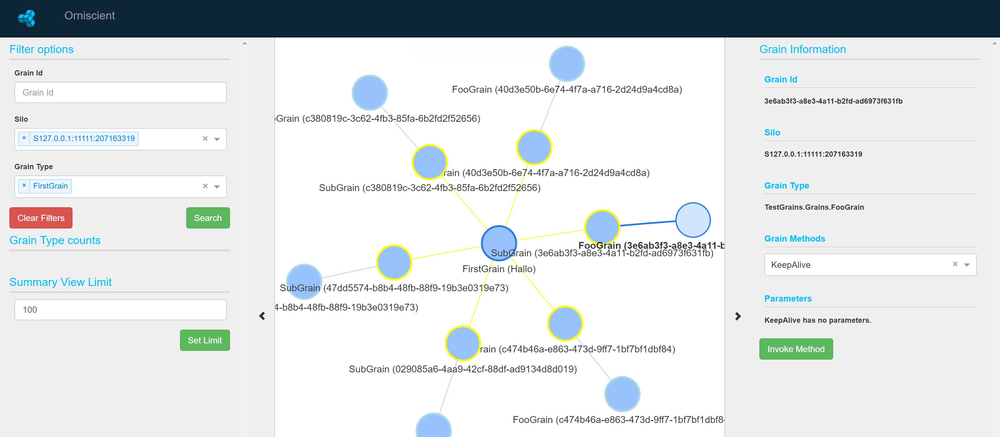

Overview
Orniscient provides an interface for visualising user grains in an Orleans cluster or meta-cluster. Grains can be filtered based on pre-defined public properties, or identifiers such as GUIDs or integer keys, in addition to concrete type definitions.
Reflection can also be used to invoke methods on active (or in future inactive) grains.
PLEASE NOTE: Status
Orniscient is still in early development and requires a post-1.2 version of Orleans to use, as it relies on a PR submitted to enable the introspection of grain data. From Orleans 1.3 onwards, Orniscient will work with any Orleans cluster.
Quick Start (WIP)
1. Install the Orniscient proxy into your cluster by stating the following into package manager:
Install-Package Derivco.Orniscient.Proxy -Pre
2. If not automatically added, manually add this snippet to your Orleans silo configuration file:
<OrleansConfiguration xmlns="urn:orleans">
<Globals>
<BootstrapProviders>
<Provider Type="Derivco.Orniscient.Proxy.BootstrapProviders.OrniscientFilterInterceptor"
Name="OrniscientFilterInterceptor"/>
</BootstrapProviders>
</Globals>
</OrleansConfiguration>
3. Download the Orniscient Viewer project, configure it to point at the cluster, build it, and execute it.
More specific details to follow.
Configuring Orniscient

-
Global grain type filters
You can set up a global grain type filter to ensure Orniscient only displays specific grains.
To set up the global filter call the following method:
OrniscientObserver.Instance.SetTypeFilter(p => p.FullName.Contains("Your namespace"));Currently this method is called in the DashboardController's index method.
-
Invoking methods via the Viewer
If you want to invoke methods on a grain from the Viewer. You need to mark the methods with the OrniscientMethod attribute.
[OrniscientMethod] public Task YourMethod() {}Note, if the Viewer is in summary mode, then the option to invoke methods is not available. You will need to use filters to find the grain on which you would like to invoke the method.
-
Setting up links (edges) between grains
By default grains will not be connected by edges on the Viewer. To link the grains, add the OrniscientGrain attribute to your grain implementation.
The following parameters are available:
-
LinkFromType - The type you would like to link from. If unspecified, the grain will not be linked to anything else.
-
LinkType - The link type. SingleInstance links to grain of a specific type, which have only one instance in the system, while SameId links to grains of specific type with same id as the source.
-
Colour - The colour of the border around the grain node.
-
DefaultLinkFromTypeId - The default to link to when using the SingleInstance link type. If unspecified, the default value of the GrainType will be used.
Example:
[OrniscientGrain(typeof(SubGrain), LinkType.SameId, "lightblue")] public class FooGrain : Grain, IFooGrain, IFilterableGrain {...} -
Setting up client side filters & grain tooltips
You can set up filters which can be configured in the Viewer to enable visualisation of a subset of grains by inheriting from the IFilterableGrain interface.
If you have a grain that implements the IFilterableGrain, you will get a tooltip with this information when you hover over the grain.
Example:
public class FooGrain : Grain, IFooGrain, IFilterableGrain { public Task
Support or Contact
Stop by gitter to discuss the tool.